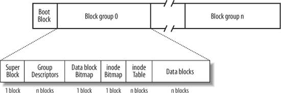
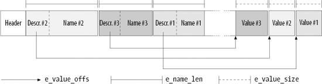
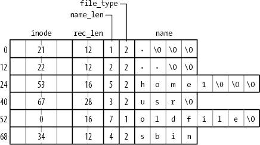

{% include JB/setup %}
{% raw %}
<div>


<a name="understandlk-CHP-18-SECT-2"></a>
<h3 class="docSection1Title">18.2. Ext2 Disk Data Structures</h3><a name="IDX-CHP-18-4324"></a>
<p class="docText1">The first block in each Ext2 partition is never managed by the Ext2 filesystem, because it is reserved for the partition boot sector (see <a class="pcalibre5 docLink pcalibre1" href="understandlk-APP-A.html#understandlk-APP-A">Appendix A</a>). The rest of the Ext2 partition is split into <span class="docEmphasis">block groups</span><a name="IDX-CHP-18-4325"></a> 
, each of which has the layout shown in <a class="pcalibre5 docLink pcalibre1" href="#understandlk-CHP-18-FIG-1">Figure 18-1</a>. As you will notice from the figure, some data structures must fit in exactly one block, while others may require more than one block. All the block groups in the filesystem have the same size and are stored sequentially, thus the kernel can derive the location of a block group in a disk simply from its integer index.</p>
<a name="understandlk-CHP-18-FIG-1"></a><p class="calibre14"><center class="calibre8">
<h5 class="docFigureTitle">Figure 18-1. Layouts of an Ext2 partition and of an Ext2 block group</h5>
</center></p><br class="calibre7"/>
<p class="docText1">Block groups reduce file fragmentation, because the kernel tries to keep the data blocks belonging to a file in the same block group, if possible. Each block in a block group contains one of the following pieces of information:</p>
<ul class="calibre11"><li class="calibre12"><p class="docText1">A copy of the filesystem's superblock</p></li><li class="calibre12"><p class="docText1">A copy of the group of block group descriptors</p></li><li class="calibre12"><p class="docText1">A data block bitmap</p></li><li class="calibre12"><p class="docText1">An inode bitmap</p></li><li class="calibre12"><p class="docText1">A table of inodes</p></li><li class="calibre12"><p class="docText1">A chunk of data that belongs to a file; i.e., data blocks</p></li></ul>
<p class="docText1">If a block does not contain any meaningful information, it is said to be free.</p>
<p class="docText1">As you can see from <a class="pcalibre5 docLink pcalibre1" href="#understandlk-CHP-18-FIG-1">Figure 18-1</a>, both the superblock and the group descriptors are duplicated in each block group. Only the superblock and the group descriptors included in block group 0 are used by the kernel, while the remaining superblocks<a name="IDX-CHP-18-4326"></a> 
 and group descriptors are left unchanged; in fact, the kernel doesn't even look at them. When the <i class="docEmphasis">e2fsck</i> program executes a consistency check on the filesystem status, it refers to the superblock and the group descriptors stored in block group 0, and then copies them into all other block groups. If data corruption occurs and the main superblock or the main group descriptors in block group 0 become invalid, the system administrator can instruct <i class="docEmphasis">e2fsck</i> to refer to the old copies of the superblock and the group descriptors stored in a block groups other than the first. Usually, the redundant copies store enough information to allow <i class="docEmphasis">e2fsck</i> to bring the Ext2 partition back to a consistent state.</p>
<p class="docText1">How many block groups are there? Well, that depends both on the partition size and the block size. The main constraint is that the block bitmap, which is used to identify the blocks that are used and free inside a group, must be stored in a single block. Therefore, in each block group, there can be at most 8x<span class="docEmphasis">b</span> blocks, where <span class="docEmphasis">b</span> is the block size in bytes. Thus, the total number of block groups is roughly <span class="docEmphasis">s</span>/(8x<span class="docEmphasis">b</span>), where <span class="docEmphasis">s</span> is the partition size in blocks.</p>
<p class="docText1">For example, let's consider a 32-GB Ext2 partition with a 4-KB block size. In this case, each 4-KB block bitmap describes 32K data blocks  that is, 128 MB. Therefore, at most 256 block groups are needed. Clearly, the smaller the block size, the larger the number of block groups.</p>
<a name="understandlk-CHP-18-SECT-2.1"></a>
<h4 class="docSection2Title">18.2.1. Superblock</h4><a name="IDX-CHP-18-4327"></a>
<a name="IDX-CHP-18-4328"></a>
<a name="IDX-CHP-18-4329"></a>
<a name="IDX-CHP-18-4330"></a>
<a name="IDX-CHP-18-4331"></a>
<a name="IDX-CHP-18-4332"></a>
<a name="IDX-CHP-18-4333"></a>
<a name="IDX-CHP-18-4334"></a>
<a name="IDX-CHP-18-4335"></a>
<a name="IDX-CHP-18-4336"></a>
<a name="IDX-CHP-18-4337"></a>
<a name="IDX-CHP-18-4338"></a>
<p class="docText1">An Ext2 disk superblock is stored in an <tt class="calibre25">ext2_super_block</tt> structure, whose fields are listed in <a class="pcalibre5 docLink pcalibre1" href="#understandlk-CHP-18-TABLE-1">Table 18-1</a>.<sup class="docFootnote"><a class="pcalibre5 docLink pcalibre1" href="#understandlk-CHP-18-FN1">[*]</a></sup> The <tt class="calibre25">_ _u8</tt>, <tt class="calibre25">_ _u16</tt>, and <tt class="calibre25">_ _u32</tt> data types denote unsigned numbers of length 8, 16, and 32 bits respectively, while the <tt class="calibre25">_ _s8</tt>, <tt class="calibre25">_ _s16</tt>, <tt class="calibre25">_ _s32</tt> data types denote signed numbers of length 8, 16, and 32 bits. To explicitly specify the order in which the bytes of a word or double-word are stored on disk, the kernel also makes use of the <tt class="calibre25">_ _le16</tt>, <tt class="calibre25">_ _le32</tt>, <tt class="calibre25">_ _be16</tt>, and <tt class="calibre25">_ _be32</tt> data types; the former two types denote the <span class="docEmphasis">little-endian ordering</span><a name="IDX-CHP-18-4339"></a> 
 for words and double-words (the least significant byte is stored at the highest address), respectively, while the latter two types denote the <span class="docEmphasis">big-endian ordering</span><a name="IDX-CHP-18-4340"></a> 
 (the most significant byte is stored at the highest address).</p><blockquote class="calibre22"><p class="docFootnote1"><sup class="calibre24"><a name="understandlk-CHP-18-FN1">[*]</a></sup> To ensure compatibility between the Ext2 and Ext3 filesystems, the <tt class="calibre42">ext2_super_block</tt> data structure includes some Ext3-specific fields, which are not shown in <a class="pcalibre5 docLink pcalibre1" href="#understandlk-CHP-18-TABLE-1">Table 18-1</a>.</p></blockquote>
<a name="understandlk-CHP-18-TABLE-1"></a><p class="calibre14"><table cellspacing="0" frame="hsides" rules="all" cellpadding="4" width="100%" class="calibre15"><caption class="calibre33"><h5 class="docFigureTitle">Table 18-1. The fields of the Ext2 superblock</h5></caption><colgroup class="calibre16"><col class="calibre17"/><col class="calibre17"/><col class="calibre17"/></colgroup><thead class="calibre18"><tr class="calibre34"><th class="thead" scope="col"><p class="docText1"><span class="calibre5">Type</span></p></th><th class="thead" scope="col"><p class="docText1"><span class="calibre5">Field</span></p></th><th class="thead" scope="col"><p class="docText1"><span class="calibre5">Description</span></p></th></tr></thead><tr class="calibre2"><td class="docTableCell"><p class="docText2"><tt class="calibre25">_ _le32</tt></p></td><td class="docTableCell"><p class="docText2"><tt class="calibre25">s_inodes_count</tt></p></td><td class="docTableCell"><p class="docText2">Total number of inodes</p></td></tr><tr class="calibre2"><td class="docTableCell"><p class="docText2"><tt class="calibre25">_ _le32</tt></p></td><td class="docTableCell"><p class="docText2"><tt class="calibre25">s_blocks_count</tt></p></td><td class="docTableCell"><p class="docText2">Filesystem size in blocks</p></td></tr><tr class="calibre2"><td class="docTableCell"><p class="docText2"><tt class="calibre25">_ _le32</tt></p></td><td class="docTableCell"><p class="docText2"><tt class="calibre25">s_r_blocks_count</tt></p></td><td class="docTableCell"><p class="docText2">Number of reserved blocks</p></td></tr><tr class="calibre2"><td class="docTableCell"><p class="docText2"><tt class="calibre25">_ _le32</tt></p></td><td class="docTableCell"><p class="docText2"><tt class="calibre25">s_free_blocks_count</tt></p></td><td class="docTableCell"><p class="docText2">Free blocks counter</p></td></tr><tr class="calibre2"><td class="docTableCell"><p class="docText2"><tt class="calibre25">_ _le32</tt></p></td><td class="docTableCell"><p class="docText2"><tt class="calibre25">s_free_inodes_count</tt></p></td><td class="docTableCell"><p class="docText2">Free inodes counter</p></td></tr><tr class="calibre2"><td class="docTableCell"><p class="docText2"><tt class="calibre25">_ _le32</tt></p></td><td class="docTableCell"><p class="docText2"><tt class="calibre25">s_first_data_block</tt></p></td><td class="docTableCell"><p class="docText2">Number of first useful block (always 1)</p></td></tr><tr class="calibre2"><td class="docTableCell"><p class="docText2"><tt class="calibre25">_ _le32</tt></p></td><td class="docTableCell"><p class="docText2"><tt class="calibre25">s_log_block_size</tt></p></td><td class="docTableCell"><p class="docText2">Block size</p></td></tr><tr class="calibre2"><td class="docTableCell"><p class="docText2"><tt class="calibre25">_ _le32</tt></p></td><td class="docTableCell"><p class="docText2"><tt class="calibre25">s_log_frag_size</tt></p></td><td class="docTableCell"><p class="docText2">Fragment size</p></td></tr><tr class="calibre2"><td class="docTableCell"><p class="docText2"><tt class="calibre25">_ _le32</tt></p></td><td class="docTableCell"><p class="docText2"><tt class="calibre25">s_blocks_per_group</tt></p></td><td class="docTableCell"><p class="docText2">Number of blocks per group</p></td></tr><tr class="calibre2"><td class="docTableCell"><p class="docText2"><tt class="calibre25">_ _le32</tt></p></td><td class="docTableCell"><p class="docText2"><tt class="calibre25">s_frags_per_group</tt></p></td><td class="docTableCell"><p class="docText2">Number of fragments per group</p></td></tr><tr class="calibre2"><td class="docTableCell"><p class="docText2"><tt class="calibre25">_ _le32</tt></p></td><td class="docTableCell"><p class="docText2"><tt class="calibre25">s_inodes_per_group</tt></p></td><td class="docTableCell"><p class="docText2">Number of inodes per group</p></td></tr><tr class="calibre2"><td class="docTableCell"><p class="docText2"><tt class="calibre25">_ _le32</tt></p></td><td class="docTableCell"><p class="docText2"><tt class="calibre25">s_mtime</tt></p></td><td class="docTableCell"><p class="docText2">Time of last mount operation</p></td></tr><tr class="calibre2"><td class="docTableCell"><p class="docText2"><tt class="calibre25">_ _le32</tt></p></td><td class="docTableCell"><p class="docText2"><tt class="calibre25">s_wtime</tt></p></td><td class="docTableCell"><p class="docText2">Time of last write operation</p></td></tr><tr class="calibre2"><td class="docTableCell"><p class="docText2"><tt class="calibre25">_ _le16</tt></p></td><td class="docTableCell"><p class="docText2"><tt class="calibre25">s_mnt_count</tt></p></td><td class="docTableCell"><p class="docText2">Mount operations counter</p></td></tr><tr class="calibre2"><td class="docTableCell"><p class="docText2"><tt class="calibre25">_ _le16</tt></p></td><td class="docTableCell"><p class="docText2"><tt class="calibre25">s_max_mnt_count</tt></p></td><td class="docTableCell"><p class="docText2">Number of mount operations before check</p></td></tr><tr class="calibre2"><td class="docTableCell"><p class="docText2"><tt class="calibre25">_ _le16</tt></p></td><td class="docTableCell"><p class="docText2"><tt class="calibre25">s_magic</tt></p></td><td class="docTableCell"><p class="docText2">Magic signature</p></td></tr><tr class="calibre2"><td class="docTableCell"><p class="docText2"><tt class="calibre25">_ _le16</tt></p></td><td class="docTableCell"><p class="docText2"><tt class="calibre25">s_state</tt></p></td><td class="docTableCell"><p class="docText2">Status flag</p></td></tr><tr class="calibre2"><td class="docTableCell"><p class="docText2"><tt class="calibre25">_ _le16</tt></p></td><td class="docTableCell"><p class="docText2"><tt class="calibre25">s_errors</tt></p></td><td class="docTableCell"><p class="docText2">Behavior when detecting errors</p></td></tr><tr class="calibre2"><td class="docTableCell"><p class="docText2"><tt class="calibre25">_ _le16</tt></p></td><td class="docTableCell"><p class="docText2"><tt class="calibre25">s_minor_rev_level</tt></p></td><td class="docTableCell"><p class="docText2">Minor revision level</p></td></tr><tr class="calibre2"><td class="docTableCell"><p class="docText2"><tt class="calibre25">_ _le32</tt></p></td><td class="docTableCell"><p class="docText2"><tt class="calibre25">s_lastcheck</tt></p></td><td class="docTableCell"><p class="docText2">Time of last check</p></td></tr><tr class="calibre2"><td class="docTableCell"><p class="docText2"><tt class="calibre25">_ _le32</tt></p></td><td class="docTableCell"><p class="docText2"><tt class="calibre25">s_checkinterval</tt></p></td><td class="docTableCell"><p class="docText2">Time between checks</p></td></tr><tr class="calibre2"><td class="docTableCell"><p class="docText2"><tt class="calibre25">_ _le32</tt></p></td><td class="docTableCell"><p class="docText2"><tt class="calibre25">s_creator_os</tt></p></td><td class="docTableCell"><p class="docText2">OS where filesystem was created</p></td></tr><tr class="calibre2"><td class="docTableCell"><p class="docText2"><tt class="calibre25">_ _le32</tt></p></td><td class="docTableCell"><p class="docText2"><tt class="calibre25">s_rev_level</tt></p></td><td class="docTableCell"><p class="docText2">Revision level of the filesystem</p></td></tr><tr class="calibre2"><td class="docTableCell"><p class="docText2"><tt class="calibre25">_ _le16</tt></p></td><td class="docTableCell"><p class="docText2"><tt class="calibre25">s_def_resuid</tt></p></td><td class="docTableCell"><p class="docText2">Default UID for reserved blocks</p></td></tr><tr class="calibre2"><td class="docTableCell"><p class="docText2"><tt class="calibre25">_ _le16</tt></p></td><td class="docTableCell"><p class="docText2"><tt class="calibre25">s_def_resgid</tt></p></td><td class="docTableCell"><p class="docText2">Default user group ID for reserved blocks</p></td></tr><tr class="calibre2"><td class="docTableCell"><p class="docText2"><tt class="calibre25">_ _le32</tt></p></td><td class="docTableCell"><p class="docText2"><tt class="calibre25">s_first_ino</tt></p></td><td class="docTableCell"><p class="docText2">Number of first nonreserved inode</p></td></tr><tr class="calibre2"><td class="docTableCell"><p class="docText2"><tt class="calibre25">_ _le16</tt></p></td><td class="docTableCell"><p class="docText2"><tt class="calibre25">s_inode_size</tt></p></td><td class="docTableCell"><p class="docText2">Size of on-disk inode structure</p></td></tr><tr class="calibre2"><td class="docTableCell"><p class="docText2"><tt class="calibre25">_ _le16</tt></p></td><td class="docTableCell"><p class="docText2"><tt class="calibre25">s_block_group_nr</tt></p></td><td class="docTableCell"><p class="docText2">Block group number of this superblock</p></td></tr><tr class="calibre2"><td class="docTableCell"><p class="docText2"><tt class="calibre25">_ _le32</tt></p></td><td class="docTableCell"><p class="docText2"><tt class="calibre25">s_feature_compat</tt></p></td><td class="docTableCell"><p class="docText2">Compatible features bitmap</p></td></tr><tr class="calibre2"><td class="docTableCell"><p class="docText2"><tt class="calibre25">_ _le32</tt></p></td><td class="docTableCell"><p class="docText2"><tt class="calibre25">s_feature_incompat</tt></p></td><td class="docTableCell"><p class="docText2">Incompatible features bitmap</p></td></tr><tr class="calibre2"><td class="docTableCell"><p class="docText2"><tt class="calibre25">_ _le32</tt></p></td><td class="docTableCell"><p class="docText2"><tt class="calibre25">s_feature_ro_compat</tt></p></td><td class="docTableCell"><p class="docText2">Read-only compatible features bitmap</p></td></tr><tr class="calibre2"><td class="docTableCell"><p class="docText2"><tt class="calibre25">_ _u8 [16]</tt></p></td><td class="docTableCell"><p class="docText2"><tt class="calibre25">s_uuid</tt></p></td><td class="docTableCell"><p class="docText2">128-bit filesystem identifier</p></td></tr><tr class="calibre2"><td class="docTableCell"><p class="docText2"><tt class="calibre25">char [16]</tt></p></td><td class="docTableCell"><p class="docText2"><tt class="calibre25">s_volume_name</tt></p></td><td class="docTableCell"><p class="docText2">Volume name</p></td></tr><tr class="calibre2"><td class="docTableCell"><p class="docText2"><tt class="calibre25">char [64]</tt></p></td><td class="docTableCell"><p class="docText2"><tt class="calibre25">s_last_mounted</tt></p></td><td class="docTableCell"><p class="docText2">Pathname of last mount point</p></td></tr><tr class="calibre2"><td class="docTableCell"><p class="docText2"><tt class="calibre25">_ _le32</tt></p></td><td class="docTableCell"><p class="docText2"><tt class="calibre25">s_algorithm_usage_bitmap</tt></p></td><td class="docTableCell"><p class="docText2">Used for compression</p></td></tr><tr class="calibre2"><td class="docTableCell"><p class="docText2"><tt class="calibre25">_ _u8</tt></p></td><td class="docTableCell"><p class="docText2"><tt class="calibre25">s_prealloc_blocks</tt></p></td><td class="docTableCell"><p class="docText2">Number of blocks to preallocate</p></td></tr><tr class="calibre2"><td class="docTableCell"><p class="docText2"><tt class="calibre25">_ _u8</tt></p></td><td class="docTableCell"><p class="docText2"><tt class="calibre25">s_prealloc_dir_blocks</tt></p></td><td class="docTableCell"><p class="docText2">Number of blocks to preallocate for directories</p></td></tr><tr class="calibre2"><td class="docTableCell"><p class="docText2"><tt class="calibre25">_ _u16</tt></p></td><td class="docTableCell"><p class="docText2"><tt class="calibre25">s_padding1</tt></p></td><td class="docTableCell"><p class="docText2">Alignment to word</p></td></tr><tr class="calibre2"><td class="docTableCell"><p class="docText2"><tt class="calibre25">_ _u32 [204]</tt></p></td><td class="docTableCell"><p class="docText2"><tt class="calibre25">s_reserved</tt></p></td><td class="docTableCell"><p class="docText2">Nulls to pad out 1,024 bytes</p></td></tr></table></p><br class="calibre7"/>
<p class="docText1">The <tt class="calibre25">s_inodes_count</tt> field stores the number of inodes, while the <tt class="calibre25">s_blocks_count</tt> field stores the number of blocks in the Ext2 filesystem.</p>
<p class="docText1">The <tt class="calibre25">s_log_block_size</tt> field expresses the block size as a power of 2, using 1,024 bytes as the unit. Thus, 0 denotes 1,024-byte blocks, 1 denotes 2,048-byte blocks, and so on. The <tt class="calibre25">s_log_frag_size</tt> field is currently equal to <tt class="calibre25">s_log_block_size</tt>, because block fragmentation is not yet implemented.</p>
<p class="docText1">The <tt class="calibre25">s_blocks_per_group</tt>, <tt class="calibre25">s_frags_per_group</tt>, and <tt class="calibre25">s_inodes_per_group</tt> fields store the number of blocks, fragments, and inodes in each block group, respectively.</p>
<p class="docText1">Some disk blocks are reserved to the superuser (or to some other user or group of users selected by the <tt class="calibre25">s_def_resuid</tt> and <tt class="calibre25">s_def_resgid</tt> fields). These blocks allow the system administrator to continue to use the filesystem even when no more free blocks are available for normal users.</p>
<p class="docText1">The <tt class="calibre25">s_mnt_count</tt>, <tt class="calibre25">s_max_mnt_count</tt>, <tt class="calibre25">s_lastcheck</tt>, and <tt class="calibre25">s_checkinterval</tt> fields set up the Ext2 filesystem to be checked automatically at boot time. These fields cause <i class="docEmphasis">e2fsck</i> to run after a predefined number of mount operations has been performed, or when a predefined amount of time has elapsed since the last consistency check. (Both kinds of checks can be used together.) The consistency check is also enforced at boot time if the filesystem has not been cleanly unmounted (for instance, after a system crash) or when the kernel discovers some errors in it. The <tt class="calibre25">s_state</tt> field stores the value 0 if the filesystem is mounted or was not cleanly unmounted, 1 if it was cleanly unmounted, and 2 if it contains errors.</p>
<a name="understandlk-CHP-18-SECT-2.2"></a>
<h4 class="docSection2Title">18.2.2. Group Descriptor and Bitmap</h4><a name="IDX-CHP-18-4341"></a>
<a name="IDX-CHP-18-4342"></a>
<p class="docText1">Each block group has its own group descriptor, an <tt class="calibre25">ext2_group_desc</tt> structure whose fields are illustrated in <a class="pcalibre5 docLink pcalibre1" href="#understandlk-CHP-18-TABLE-2">Table 18-2</a>.</p>
<a name="understandlk-CHP-18-TABLE-2"></a><p class="calibre14"><table cellspacing="0" frame="hsides" rules="all" cellpadding="4" width="100%" class="calibre15"><caption class="calibre33"><h5 class="docFigureTitle">Table 18-2. The fields of the Ext2 group descriptor</h5></caption><colgroup class="calibre16"><col class="calibre17"/><col class="calibre17"/><col class="calibre17"/></colgroup><thead class="calibre18"><tr class="calibre34"><th class="thead" scope="col"><p class="docText1"><span class="calibre5">Type</span></p></th><th class="thead" scope="col"><p class="docText1"><span class="calibre5">Field</span></p></th><th class="thead" scope="col"><p class="docText1"><span class="calibre5">Description</span></p></th></tr></thead><tr class="calibre2"><td class="docTableCell"><p class="docText2"><tt class="calibre25">_ _le32</tt></p></td><td class="docTableCell"><p class="docText2"><tt class="calibre25">bg_block_bitmap</tt></p></td><td class="docTableCell"><p class="docText2">Block number of block bitmap<a name="IDX-CHP-18-4343"></a>
</p></td></tr><tr class="calibre2"><td class="docTableCell"><p class="docText2"><tt class="calibre25">_ _le32</tt></p></td><td class="docTableCell"><p class="docText2"><tt class="calibre25">bg_inode_bitmap</tt></p></td><td class="docTableCell"><p class="docText2">Block number of inode bitmap</p></td></tr><tr class="calibre2"><td class="docTableCell"><p class="docText2"><tt class="calibre25">_ _le32</tt></p></td><td class="docTableCell"><p class="docText2"><tt class="calibre25">bg_inode_table</tt></p></td><td class="docTableCell"><p class="docText2">Block number of first inode table block</p></td></tr><tr class="calibre2"><td class="docTableCell"><p class="docText2"><tt class="calibre25">_ _le16</tt></p></td><td class="docTableCell"><p class="docText2"><tt class="calibre25">bg_free_blocks_count</tt></p></td><td class="docTableCell"><p class="docText2">Number of free blocks in the group</p></td></tr><tr class="calibre2"><td class="docTableCell"><p class="docText2"><tt class="calibre25">_ _le16</tt></p></td><td class="docTableCell"><p class="docText2"><tt class="calibre25">bg_free_inodes_count</tt></p></td><td class="docTableCell"><p class="docText2">Number of free inodes in the group</p></td></tr><tr class="calibre2"><td class="docTableCell"><p class="docText2"><tt class="calibre25">_ _le16</tt></p></td><td class="docTableCell"><p class="docText2"><tt class="calibre25">bg_used_dirs_count</tt></p></td><td class="docTableCell"><p class="docText2">Number of directories in the group</p></td></tr><tr class="calibre2"><td class="docTableCell"><p class="docText2"><tt class="calibre25">_ _le16</tt></p></td><td class="docTableCell"><p class="docText2"><tt class="calibre25">bg_pad</tt></p></td><td class="docTableCell"><p class="docText2">Alignment to word</p></td></tr><tr class="calibre2"><td class="docTableCell"><p class="docText2"><tt class="calibre25">_ _le32 [3]</tt></p></td><td class="docTableCell"><p class="docText2"><tt class="calibre25">bg_reserved</tt></p></td><td class="docTableCell"><p class="docText2">Nulls to pad out 24 bytes</p></td></tr></table></p><br class="calibre7"/>
<p class="docText1">The <tt class="calibre25">bg_free_blocks_count</tt>, <tt class="calibre25">bg_free_inodes_count</tt>, and <tt class="calibre25">bg_used_dirs_count</tt> fields are used when allocating new inodes and data blocks. These fields determine the most suitable block in which to allocate each data structure. The bitmaps are sequences of bits, where the value 0 specifies that the corresponding inode or data block is free and the value 1 specifies that it is used. Because each bitmap must be stored inside a single block and because the block size can be 1,024, 2,048, or 4,096 bytes, a single bitmap describes the state of 8,192, 16,384, or 32,768 blocks.</p>
<a name="understandlk-CHP-18-SECT-2.3"></a>
<h4 class="docSection2Title">18.2.3. Inode Table</h4><a name="IDX-CHP-18-4344"></a>
<a name="IDX-CHP-18-4345"></a>
<a name="IDX-CHP-18-4346"></a>
<a name="IDX-CHP-18-4347"></a>
<p class="docText1">The inode table consists of a series of consecutive blocks, each of which contains a predefined number of inodes. The block number of the first block of the inode table is stored in the <tt class="calibre25">bg_inode_table</tt> field of the group descriptor.</p>
<p class="docText1">All inodes have the same size: 128 bytes. A 1,024-byte block contains 8 inodes, while a 4,096-byte block contains 32 inodes. To figure out how many blocks are occupied by the inode table, divide the total number of inodes in a group (stored in the <tt class="calibre25">s_inodes_per_group</tt> field of the superblock) by the number of inodes per block.</p>
<p class="docText1">Each Ext2 inode is an <tt class="calibre25">ext2_inode</tt> structure whose fields are illustrated in <a class="pcalibre5 docLink pcalibre1" href="#understandlk-CHP-18-TABLE-3">Table 18-3</a>.</p>
<a name="understandlk-CHP-18-TABLE-3"></a><p class="calibre14"><table cellspacing="0" frame="hsides" rules="all" cellpadding="4" width="100%" class="calibre15"><caption class="calibre33"><h5 class="docFigureTitle">Table 18-3. The fields of an Ext2 disk inode</h5></caption><colgroup class="calibre16"><col class="calibre17"/><col class="calibre17"/><col class="calibre17"/></colgroup><thead class="calibre18"><tr class="calibre34"><th class="thead" scope="col"><p class="docText1"><span class="calibre5">Type</span></p></th><th class="thead" scope="col"><p class="docText1"><span class="calibre5">Field</span></p></th><th class="thead" scope="col"><p class="docText1"><span class="calibre5">Description</span></p></th></tr></thead><tr class="calibre2"><td class="docTableCell"><p class="docText2"><tt class="calibre25">_ _le16</tt></p></td><td class="docTableCell"><p class="docText2"><tt class="calibre25">i_mode</tt></p></td><td class="docTableCell"><p class="docText2">File type and access rights</p></td></tr><tr class="calibre2"><td class="docTableCell"><p class="docText2"><tt class="calibre25">_ _le16</tt></p></td><td class="docTableCell"><p class="docText2"><tt class="calibre25">i_uid</tt></p></td><td class="docTableCell"><p class="docText2">Owner identifier</p></td></tr><tr class="calibre2"><td class="docTableCell"><p class="docText2"><tt class="calibre25">_ _le32</tt></p></td><td class="docTableCell"><p class="docText2"><tt class="calibre25">i_size</tt></p></td><td class="docTableCell"><p class="docText2">File length in bytes</p></td></tr><tr class="calibre2"><td class="docTableCell"><p class="docText2"><tt class="calibre25">_ _le32</tt></p></td><td class="docTableCell"><p class="docText2"><tt class="calibre25">i_atime</tt></p></td><td class="docTableCell"><p class="docText2">Time of last file access</p></td></tr><tr class="calibre2"><td class="docTableCell"><p class="docText2"><tt class="calibre25">_ _le32</tt></p></td><td class="docTableCell"><p class="docText2"><tt class="calibre25">i_ctime</tt></p></td><td class="docTableCell"><p class="docText2">Time that inode last changed</p></td></tr><tr class="calibre2"><td class="docTableCell"><p class="docText2"><tt class="calibre25">_ _le32</tt></p></td><td class="docTableCell"><p class="docText2"><tt class="calibre25">i_mtime</tt></p></td><td class="docTableCell"><p class="docText2">Time that file contents last changed</p></td></tr><tr class="calibre2"><td class="docTableCell"><p class="docText2"><tt class="calibre25">_ _le32</tt></p></td><td class="docTableCell"><p class="docText2"><tt class="calibre25">i_dtime</tt></p></td><td class="docTableCell"><p class="docText2">Time of file deletion</p></td></tr><tr class="calibre2"><td class="docTableCell"><p class="docText2"><tt class="calibre25">_ _le16</tt></p></td><td class="docTableCell"><p class="docText2"><tt class="calibre25">i_gid</tt></p></td><td class="docTableCell"><p class="docText2">User group identifier</p></td></tr><tr class="calibre2"><td class="docTableCell"><p class="docText2"><tt class="calibre25">_ _le16</tt></p></td><td class="docTableCell"><p class="docText2"><tt class="calibre25">i_links_count</tt></p></td><td class="docTableCell"><p class="docText2">Hard links counter</p></td></tr><tr class="calibre2"><td class="docTableCell"><p class="docText2"><tt class="calibre25">_ _le32</tt></p></td><td class="docTableCell"><p class="docText2"><tt class="calibre25">i_blocks</tt></p></td><td class="docTableCell"><p class="docText2">Number of data blocks of the file</p></td></tr><tr class="calibre2"><td class="docTableCell"><p class="docText2"><tt class="calibre25">_ _le32</tt></p></td><td class="docTableCell"><p class="docText2"><tt class="calibre25">i_flags</tt></p></td><td class="docTableCell"><p class="docText2">File flags</p></td></tr><tr class="calibre2"><td class="docTableCell"><p class="docText2"><tt class="calibre25">union</tt></p></td><td class="docTableCell"><p class="docText2"><tt class="calibre25">osd1</tt></p></td><td class="docTableCell"><p class="docText2">Specific operating system information</p></td></tr><tr class="calibre2"><td class="docTableCell"><p class="docText2"><tt class="calibre25">_ _le32 [EXT2_N_BLOCKS]</tt></p></td><td class="docTableCell"><p class="docText2"><tt class="calibre25">i_block</tt></p></td><td class="docTableCell"><p class="docText2">Pointers to data blocks</p></td></tr><tr class="calibre2"><td class="docTableCell"><p class="docText2"><tt class="calibre25">_ _le32</tt></p></td><td class="docTableCell"><p class="docText2"><tt class="calibre25">i_generation</tt></p></td><td class="docTableCell"><p class="docText2">File version (used when the file is accessed by a</p><p class="docText2">network filesystem)</p></td></tr><tr class="calibre2"><td class="docTableCell"><p class="docText2"><tt class="calibre25">_ _le32</tt></p></td><td class="docTableCell"><p class="docText2"><tt class="calibre25">i_file_acl</tt></p></td><td class="docTableCell"><p class="docText2">File access control list</p></td></tr><tr class="calibre2"><td class="docTableCell"><p class="docText2"><tt class="calibre25">_ _le32</tt></p></td><td class="docTableCell"><p class="docText2"><tt class="calibre25">i_dir_acl</tt></p></td><td class="docTableCell"><p class="docText2">Directory access control list</p></td></tr><tr class="calibre2"><td class="docTableCell"><p class="docText2"><tt class="calibre25">_ _le32</tt></p></td><td class="docTableCell"><p class="docText2"><tt class="calibre25">i_faddr</tt></p></td><td class="docTableCell"><p class="docText2">Fragment address</p></td></tr><tr class="calibre2"><td class="docTableCell"><p class="docText2"><tt class="calibre25">union</tt></p></td><td class="docTableCell"><p class="docText2"><tt class="calibre25">osd2</tt></p></td><td class="docTableCell"><p class="docText2">Specific operating system information</p></td></tr></table></p><br class="calibre7"/>
<p class="docText1">Many fields related to POSIX specifications are similar to the corresponding fields of the VFS's inode object and have already been discussed in the section "<a class="pcalibre5 docLink pcalibre1" href="understandlk-CHP-12-SECT-2.html#understandlk-CHP-12-SECT-2.2">Inode Objects</a>" in <a class="pcalibre5 docLink pcalibre1" href="understandlk-CHP-12.html#understandlk-CHP-12">Chapter 12</a>. The remaining ones refer to the Ext2-specific implementation and deal mostly with block allocation.</p>
<p class="docText1">In particular, the <tt class="calibre25">i_size</tt> field stores the effective length of the file in bytes, while the <tt class="calibre25">i_blocks</tt> field stores the number of data blocks (in units of 512 bytes) that have been allocated to the file.</p>
<p class="docText1">The values of <tt class="calibre25">i_size</tt> and <tt class="calibre25">i_blocks</tt> are not necessarily related. Because a file is always stored in an integer number of blocks, a nonempty file receives at least one data block (since fragmentation is not yet implemented) and <tt class="calibre25">i_size</tt> may be smaller than 512 x<tt class="calibre25">i_blocks</tt>. On the other hand, as we'll see in the section "<a class="pcalibre5 docLink pcalibre1" href="understandlk-CHP-18-SECT-6.html#understandlk-CHP-18-SECT-6.4">File Holes</a>" later in this chapter, a file may contain holes. In that case, <tt class="calibre25">i_size</tt> may be greater than 512 x<tt class="calibre25">i_blocks</tt>.</p>
<p class="docText1">The <tt class="calibre25">i_block</tt> field is an array of <tt class="calibre25">EXT2_N_BLOCKS</tt> (usually 15) pointers to blocks used to identify the data blocks allocated to the file (see the section "<a class="pcalibre5 docLink pcalibre1" href="understandlk-CHP-18-SECT-6.html#understandlk-CHP-18-SECT-6.3">Data Blocks Addressing</a>" later in this chapter).</p>
<p class="docText1">The 32 bits reserved for the <tt class="calibre25">i_size</tt> field limit the file size to 4 GB. Actually, the highest-order bit of the <tt class="calibre25">i_size</tt> field is not used, so the maximum file size is limited to 2 GB. However, the Ext2 filesystem includes a "dirty trick" that allows larger files on systems that sport a 64-bit processor such as AMD's Opteron<a name="IDX-CHP-18-4348"></a> 
 or IBM's PowerPC<a name="IDX-CHP-18-4349"></a> 
 G5. Essentially, the <tt class="calibre25">i_dir_acl</tt> field of the inode, which is not used for regular files, represents a 32-bit extension of the <tt class="calibre25">i_size</tt> field. Therefore, the file size is stored in the inode as a 64-bit integer. The 64-bit version of the Ext2 filesystem is somewhat compatible with the 32-bit version because an Ext2 filesystem created on a 64-bit architecture may be mounted on a 32-bit architecture, and vice versa. On a 32-bit architecture, a large file cannot be accessed, unless opening the file with the <tt class="calibre25">O_LARGEFILE</tt> flag set (see the section "<a class="pcalibre5 docLink pcalibre1" href="understandlk-CHP-12-SECT-6.html#understandlk-CHP-12-SECT-6.1">The open( ) System Call</a>" in <a class="pcalibre5 docLink pcalibre1" href="understandlk-CHP-12.html#understandlk-CHP-12">Chapter 12</a>).</p>
<p class="docText1">Recall that the VFS model requires each file to have a different inode number. In Ext2, there is no need to store on disk a mapping between an inode number and the corresponding block number because the latter value can be derived from the block group number and the relative position inside the inode table. For example, suppose that each block group contains 4,096 inodes and that we want to know the address on disk of inode 13,021. In this case, the inode belongs to the third block group and its disk address is stored in the 733rd entry of the corresponding inode table. As you can see, the inode number is just a key used by the Ext2 routines to retrieve the proper inode descriptor on disk quickly.</p>
<a name="understandlk-CHP-18-SECT-2.4"></a>
<h4 class="docSection2Title">18.2.4. Extended Attributes of an Inode</h4><a name="IDX-CHP-18-4350"></a>
<p class="docText1">The Ext2 inode format is a kind of straitjacket for filesystem designers. The length of an inode must be a power of 2 to avoid internal fragmentation in the blocks that store the inode table. Actually, most of the 128 characters of an Ext2 inode are currently packed with information, and there is little room left for additional fields. On the other hand, expanding the inode length to 256 would be quite wasteful, besides introducing compatibility problems between Ext2 filesystems that use different inode lengths.</p>
<p class="docText1"><span class="docEmphasis">Extended attributes</span> have been introduced to overcome the above limitation. These attributes are stored on a disk block allocated outside of any inode. The <tt class="calibre25">i_file_acl</tt> field of an inode points to the block containing the extended attributes<a name="IDX-CHP-18-4351"></a> 
. Different inodes that have the same set of extended attributes may share the same block.</p>
<p class="docText1">Each extended attribute has a name and a value. Both of them are encoded as variable length arrays of characters, as specified by the <tt class="calibre25">ext2_xattr_entry</tt> descriptor. <a class="pcalibre5 docLink pcalibre1" href="#understandlk-CHP-18-FIG-2">Figure 18-2</a> shows the layout in Ext2 of the extended attributes inside a block. Each attribute is split in two parts: the <tt class="calibre25">ext2_xattr_entry</tt> descriptor together with the name of the attribute are placed at the beginning of the block, while the value of the attribute is placed at the end of the block. The entries at the beginning of the block are ordered according to the attribute names, while the positions of the values are fixed, because they are determined by the allocation order of the attributes.</p>
<a name="understandlk-CHP-18-FIG-2"></a><p class="calibre14"><center class="calibre8">
<h5 class="docFigureTitle">Figure 18-2. Layout of a block containing extended attributes</h5>
</center></p><br class="calibre7"/>
<p class="docText1">There are many system calls used to set, retrieve, list, and remove the extended attributes of a file. The <tt class="calibre25">setxattr( )</tt><a name="IDX-CHP-18-4352"></a> 
, <tt class="calibre25">lsetxattr( )</tt><a name="IDX-CHP-18-4353"></a> 
, and <tt class="calibre25">fsetxattr( )</tt><a name="IDX-CHP-18-4354"></a> 
 system calls set an extended attribute of a file; essentially, they differ in how symbolic links are handled, and in how the file is specified (either passing a pathname or a file descriptor). Similarly, the <tt class="calibre25">getxattr( )</tt><a name="IDX-CHP-18-4355"></a> 
, <tt class="calibre25">lgetxattr( )</tt><a name="IDX-CHP-18-4356"></a> 
, and <tt class="calibre25">fgetxattr( )</tt><a name="IDX-CHP-18-4357"></a> 
 system calls return the value of an extended attribute. The <tt class="calibre25">listxattr( )</tt>, <tt class="calibre25">llistxattr( )</tt><a name="IDX-CHP-18-4358"></a> 
, and <tt class="calibre25">flistxattr( )</tt><a name="IDX-CHP-18-4359"></a> 
 list all extended attributes of a file. Finally, the <tt class="calibre25">removexattr( )</tt><a name="IDX-CHP-18-4360"></a> 
, <tt class="calibre25">lremovexattr( )</tt><a name="IDX-CHP-18-4361"></a> 
, and <tt class="calibre25">fremovexattr( )</tt><a name="IDX-CHP-18-4362"></a> 
 system calls remove an extended attribute from a file.</p>
<a name="understandlk-CHP-18-SECT-2.5"></a>
<h4 class="docSection2Title">18.2.5. Access Control Lists</h4><a name="IDX-CHP-18-4363"></a>
<a name="IDX-CHP-18-4364"></a>
<a name="IDX-CHP-18-4365"></a>
<a name="IDX-CHP-18-4366"></a>
<p class="docText1">Access control lists were proposed a long time ago to improve the file protection mechanism in Unix filesystems. Instead of classifying the users of a file under three classesowner, group, and othersan <span class="docEmphasis">access control list</span> (<span class="docEmphasis">ACL</span>) can be associated with each file. Thanks to this kind of list, a user may specify for each of his files the names of specific users (or groups of users) and the privileges to be given to these users.</p>
<p class="docText1">Linux 2.6 fully supports ACLs by making use of inode extended attributes. As a matter of fact, extended attributes have been introduced mainly to support ACLs. Therefore, the <tt class="calibre25">chacl( )</tt><a name="IDX-CHP-18-4367"></a> 
, <tt class="calibre25">setfacl( )</tt><a name="IDX-CHP-18-4368"></a> 
, and <tt class="calibre25">getfacl( )</tt><a name="IDX-CHP-18-4369"></a> 
 library functions, which allow you to manipulate the ACLs of a file, rely essentially upon the <tt class="calibre25">setxattr( )</tt> and <tt class="calibre25">getxattr( )</tt> system calls introduced in the previous section.</p>
<p class="docText1">Unfortunately, the outcome of a working group that defined security extensions within the POSIX 1003.1 family of standards has never been formalized as a new POSIX standard. As a result, ACLs are supported nowadays on different filesystem types on many UNIX-like systems, albeit with a number of subtle differences among the different implementations.</p>
<a name="understandlk-CHP-18-SECT-2.6"></a>
<h4 class="docSection2Title">18.2.6. How Various File Types Use Disk Blocks</h4><a name="IDX-CHP-18-4370"></a>
<a name="IDX-CHP-18-4371"></a>
<a name="IDX-CHP-18-4372"></a>
<a name="IDX-CHP-18-4373"></a>
<p class="docText1">The different types of files recognized by Ext2 (regular files, pipes, etc.) use data blocks in different ways. Some files store no data and therefore need no data blocks at all. This section discusses the storage requirements for each type, which are listed in <a class="pcalibre5 docLink pcalibre1" href="#understandlk-CHP-18-TABLE-4">Table 18-4</a>.</p>
<a name="understandlk-CHP-18-TABLE-4"></a><p class="calibre14"><table cellspacing="0" frame="hsides" rules="all" cellpadding="4" width="100%" class="calibre15"><caption class="calibre33"><h5 class="docFigureTitle">Table 18-4. Ext2 file types</h5></caption><colgroup class="calibre16"><col class="calibre17"/><col class="calibre17"/></colgroup><thead class="calibre18"><tr class="calibre34"><th class="thead" scope="col"><p class="docText1"><span class="calibre5">File_type</span></p></th><th class="thead" scope="col"><p class="docText1"><span class="calibre5">Description</span></p></th></tr></thead><tr class="calibre2"><td class="docTableCell"><p class="docText2">0</p></td><td class="docTableCell"><p class="docText2">Unknown</p></td></tr><tr class="calibre2"><td class="docTableCell"><p class="docText2">1</p></td><td class="docTableCell"><p class="docText2">Regular file</p></td></tr><tr class="calibre2"><td class="docTableCell"><p class="docText2">2</p></td><td class="docTableCell"><p class="docText2">Directory</p></td></tr><tr class="calibre2"><td class="docTableCell"><p class="docText2">3</p></td><td class="docTableCell"><p class="docText2">Character device</p></td></tr><tr class="calibre2"><td class="docTableCell"><p class="docText2">4</p></td><td class="docTableCell"><p class="docText2">Block device</p></td></tr><tr class="calibre2"><td class="docTableCell"><p class="docText2">5</p></td><td class="docTableCell"><p class="docText2">Named pipe</p></td></tr><tr class="calibre2"><td class="docTableCell"><p class="docText2">6</p></td><td class="docTableCell"><p class="docText2">Socket</p></td></tr><tr class="calibre2"><td class="docTableCell"><p class="docText2">7</p></td><td class="docTableCell"><p class="docText2">Symbolic link</p></td></tr></table></p><br class="calibre7"/>
<a name="understandlk-CHP-18-SECT-2.6.1"></a>
<h5 class="docSection3Title">18.2.6.1. Regular file</h5>
<p class="docText1">Regular files are the most common case and receive almost all the attention in this chapter. But a regular file needs data blocks only when it starts to have data. When first created, a regular file is empty and needs no data blocks; it can also be emptied by the <tt class="calibre25">truncate( )</tt> or <tt class="calibre25">open( )</tt><a name="IDX-CHP-18-4374"></a> 
 system calls. Both situations are common; for instance, when you issue a shell command that includes the string <i class="docEmphasis">&gt;filename</i>, the shell creates an empty file or truncates an existing one.</p>
<a name="understandlk-CHP-18-SECT-2.6.2"></a>
<h5 class="docSection3Title">18.2.6.2. Directory</h5>
<p class="docText1">Ext2 implements directories as a special kind of file whose data blocks store filenames together with the corresponding inode numbers. In particular, such data blocks contain structures of type <tt class="calibre25">ext2_dir_entry_2</tt>. The fields of that structure are shown in <a class="pcalibre5 docLink pcalibre1" href="#understandlk-CHP-18-TABLE-5">Table 18-5</a>. The structure has a variable length, because the last <tt class="calibre25">name</tt> field is a variable length array of up to <tt class="calibre25">EXT2_NAME_LEN</tt> characters (usually 255). Moreover, for reasons of efficiency, the length of a directory entry is always a multiple of 4 and, therefore, null characters (<tt class="calibre25">\0</tt>) are added for padding at the end of the filename, if necessary. The <tt class="calibre25">name_len</tt> field stores the actual filename length (see <a class="pcalibre5 docLink pcalibre1" href="#understandlk-CHP-18-FIG-3">Figure 18-3</a>).</p>
<a name="understandlk-CHP-18-TABLE-5"></a><p class="calibre14"><table cellspacing="0" frame="hsides" rules="all" cellpadding="4" width="100%" class="calibre15"><caption class="calibre33"><h5 class="docFigureTitle">Table 18-5. The fields of an Ext2 directory entry</h5></caption><colgroup class="calibre16"><col class="calibre17"/><col class="calibre17"/><col class="calibre17"/></colgroup><thead class="calibre18"><tr class="calibre34"><th class="thead" scope="col"><p class="docText1"><span class="calibre5">Type</span></p></th><th class="thead" scope="col"><p class="docText1"><span class="calibre5">Field</span></p></th><th class="thead" scope="col"><p class="docText1"><span class="calibre5">Description</span></p></th></tr></thead><tr class="calibre2"><td class="docTableCell"><p class="docText2"><tt class="calibre25">_ _le32</tt></p></td><td class="docTableCell"><p class="docText2"><tt class="calibre25">inode</tt></p></td><td class="docTableCell"><p class="docText2">Inode number</p></td></tr><tr class="calibre2"><td class="docTableCell"><p class="docText2"><tt class="calibre25">_ _le16</tt></p></td><td class="docTableCell"><p class="docText2"><tt class="calibre25">rec_len</tt></p></td><td class="docTableCell"><p class="docText2">Directory entry length</p></td></tr><tr class="calibre2"><td class="docTableCell"><p class="docText2"><tt class="calibre25">_ _u8</tt></p></td><td class="docTableCell"><p class="docText2"><tt class="calibre25">name_len</tt></p></td><td class="docTableCell"><p class="docText2">Filename length</p></td></tr><tr class="calibre2"><td class="docTableCell"><p class="docText2"><tt class="calibre25">_ _u8</tt></p></td><td class="docTableCell"><p class="docText2"><tt class="calibre25">file_type</tt></p></td><td class="docTableCell"><p class="docText2">File type</p></td></tr><tr class="calibre2"><td class="docTableCell"><p class="docText2"><tt class="calibre25">char [EXT2_NAME_LEN]</tt></p></td><td class="docTableCell"><p class="docText2"><tt class="calibre25">name</tt></p></td><td class="docTableCell"><p class="docText2">Filename</p></td></tr></table></p><br class="calibre7"/>
<p class="docText1">The <tt class="calibre25">file_type</tt> field stores a value that specifies the file type (see <a class="pcalibre5 docLink pcalibre1" href="#understandlk-CHP-18-TABLE-4">Table 18-4</a>). The <tt class="calibre25">rec_len</tt> field may be interpreted as a pointer to the next valid directory entry: it is the offset to be added to the starting address of the directory entry to get the starting address of the next valid directory entry. To delete a directory entry, it is sufficient to set its <tt class="calibre25">inode</tt> field to 0 and suitably increment the value of the <tt class="calibre25">rec_len</tt> field of the previous valid entry. Read the <tt class="calibre25">rec_len</tt> field of <a class="pcalibre5 docLink pcalibre1" href="#understandlk-CHP-18-FIG-3">Figure 18-3</a> carefully; you'll see that the <i class="docEmphasis">oldfile</i> entry was deleted because the <tt class="calibre25">rec_len</tt> field of <i class="docEmphasis">usr</i> is set to 12+16 (the lengths of the <i class="docEmphasis">usr</i> and <i class="docEmphasis">oldfile</i> entries).</p>
<a name="understandlk-CHP-18-FIG-3"></a><p class="calibre14"><center class="calibre8">
<h5 class="docFigureTitle">Figure 18-3. An example of the Ext2 directory</h5>
</center></p><br class="calibre7"/>
<a name="understandlk-CHP-18-SECT-2.6.3"></a>
<h5 class="docSection3Title">18.2.6.3. Symbolic link</h5><a name="IDX-CHP-18-4375"></a>
<a name="IDX-CHP-18-4376"></a>
<p class="docText1">As stated before, if the pathname of a symbolic link has up to 60 characters, it is stored in the <tt class="calibre25">i_block</tt> field of the inode, which consists of an array of 15 4-byte integers; no data block is therefore required. If the pathname is longer than 60 characters, however, a single data block is required.</p>
<a name="understandlk-CHP-18-SECT-2.6.4"></a>
<h5 class="docSection3Title">18.2.6.4. Device file, pipe, and socket</h5>
<p class="docText1">No data blocks are required for these kinds of files. All the necessary information is stored in the inode.</p>
<a href="31071535.html"></a>
<br class="calibre7"/>

</div>

{% endraw %}

